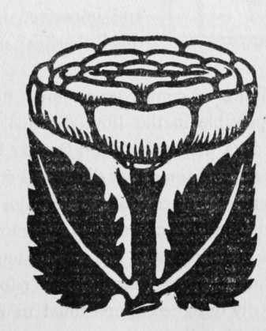

The Hand Camera In Use. Part 3
Description
This section is from the book "The Barnet Book Of Photography", by Herts Barnet. Also available from Amazon: The Barnet Book Of Photography.
The Hand Camera In Use. Part 3
There is not much need in the earlier stages of hand camera work to mark each plate, and in most instances these brief particulars on the plate box will be a sufficient guide.
If plates are being used in reloading your camera, a sharp tap on the edge will dislodge any particles of dust: never dust them with rags or brushes—this method is a productive cause of subsequent " pin-holes".
Another important item that the beginner would do well to observe is : place the order for whatever quantity of plates or films are thought necessary some time before leaving home. This means that you will get your plates fresh, and probably coated with an emulsion of a uniform speed, instead of a possible variety of makes of an unknown age and rapidity.
If it is to the seaside that you are going, there is no need to choose a very rapid brand of plates ; indeed, you would be courting disaster were you to do so, a medium speed being ample for seaside work during the summer months. In our own practice we take one brand of plates of two speeds, half of medium rapidity, the other fast, or double the rapidity of the medium; these latter are used for street work or market-places, where their greater sensitiveness counterbalances the prevalence of shadow.
If you are a cyclist, and carry your camera with you, very stringent precautions must be taken to keep the inside of the camera free from dust, as owing to the constant jarring the mysterious dust particles have always the greatest predilection for the most important portion of the plate.
The methods that have been advocated from time to time as to the best position for carrying the camera when cycling are many. Some will advocate a carrier on the handlebar; others will tell you that behind the saddle is the best place to carry the camera; but, notwithstanding just a little inconvenience in very hot weather, we strongly advocate the web strap and the camera slung across the shoulders—in this position the weight is hardly noticeable, and jarring quite obviated.
The next lesson may now suitably be called " Exposing the Plate".
We will suppose you have reached your destination, and, for example, we will say at a market-place. To the hand camera man such a place is usually prolific in possibilities. The moving figures, the groups at the stalls, and the freedom from observation with which exposures may be made, are some of the factors that help to give the camera plenty of material to work upon. Presence of mind and a quick eye for seeing suitable subjects are the two qualities that are needed in such a place. Don't get excited or impatient; make up your mind what you want and devote a little thought before releasing your shutter. If you have not already done so, work out the exposure that you think the subject demands, making the allowances that may be necessary, as, for instance, the distance at which you propose exposing, whether the figures are in the shade or not, etc. Next from afar note the position of the various items, such as baskets, etc. ; see which will be the best position so that the subject is well lit. It is recommended that at first the sun should shine on the side of your subject or diagonally across your shoulders from the back, thus obviating any very pronounced shadow contrast, for it will be owing to the shadows that difficulty may arise in development—the old adage, "expose for the shadows and let the high lights take care of themselves," is a good one for the beginner. Having now made sure that all is ready, stroll up to the selected position and quickly expose your plate, continuing along so that at the first opportunity you may change your plate or film unobserved. The great majority of failures in such work as this arise from the fault of the photographer attracting the attention of the market people to his movements. If he will persist in stalking about with his back bent and his eyes intent on the mirror or finder, he must not wonder if the market folk become interested in his " goings on," and his resulting negatives betray a group of people earnestly staring at the camera instead of in their characteristic attitudes of buying and selling. Probably this is all owing to the implicit reliance that is placed on the " view finder," which, after all is said and done, is seldom necessary. Given a little practice and a determination to dispense with it, and it is astonishing how soon one can do without the finder altogether. Let the beginner train his eyes as "view finders," he will soon find by actual experience that he will be able to secure quite as good a selection of subjects, and without being nearly so liable to attract attention.
If it is found that the figures or group are painfully conscious of the presence of the camera, tact must be brought into play—be aggressively unconscious that one is attracting any attention whatever, and that photography is about the last thing that is being thought about. A pipe can be ostentatiously loaded, a placard on a hoarding can be studied ; or, in fact, anything that may suggest itself to the " wily " man with the camera until watching his time the opportunity may come when a successful exposure may be made.
At first, even although giving only ^th of a second exposure, you may find on development that the picture is blurred. This is because on rapidly bringing the camera into position you released the shutter before the camera was quite still. There is often this tendency to "shake" at the commencement of hand camera practice. Practice, however, will give you the confidence that means being quite calm and self-possessed at the moment of exposure, and thereby securing a sharp image. Some operators will tell you to hold your breath as a cure, others will say deflate your lungs, and so on, and, like Mark Twain and his cures for a cold, you will try them all, and will, perhaps, succeed none the better.
If your camera is one of the folding type, and capable of different extensions, it is seldom advisable to work with the bellows racked out so that everything is in focus. This may be all very well when a sharp all over general view is wanted, but it is, to say the least, a disadvantage from an interesting, as well as a pictorial, point of view, if in exposing a plate on a figure as close as ten to fifteen feet you also secure the detail in the architecture of some houses two hundred yards away. Just a slight blur amounting only to a softening in these latter would have thrown up more prominently the object photographed, and would do much to centre the interest.
Next there will come a time when photographs of rapidly moving objects such as trains, men walking, cycling, etc, etc, will be the reader's aim, and these owing to the more or less rapid movement will require a proportionately brief exposure. The little table herewith will give a rough estimate of the exposure necessary to secure sharpness :
Moving at Approaching Right Angles.
Walking . . . Jgth second i^th second.
Cycling, Pony and Trap i<jotn second 3ootn second.
Horse Galloping, Trains 2Sotn second eootn second.
This table assumes that the camera is at a distance of at least forty feet from the object, and that the camera is a quarter-plate fitted with a lens of 4^ in. focus. These exposures can be lengthened as one recedes farther from the object. It will be seen, however, from this how useless it is to attempt an exposure on a subject that requires say t^th second, when the greatest speed the shutter is known to work at is ^th second, also if calculation shows that at such a time of day, and with the plate in use the only result can be gross under-exposure. Nor are these the subjects that the amateur with the ordinary outfit is well advised in attempting. The moving train, we know, always has a fascination for the beginner, but he should remember that even if he can give a short enough exposure for a railway train travelling at fifty miles an hour, yet the result will seldom come up to his expectations, and an exposure ten times as long made on a train just starting will usually give an infinitely more pleasing result. Breaking waves are also another temptation upon which a little advice may be offered; about one-thirtieth of a second is the exposure required—a shorter exposure than this will destroy the signs of movement, and give the water a petrified look that is so undesirable. A dull day is often the best; sea foam and a blue sky have a tendency of both coming out white in the resulting print.
The varying heights at which it is best to hold one's camera can only be found by practice. To accentuate a single figure a height of three feet from the ground is about right; higher for a general view. A low view point is more often desirable than a high one—painters in fact nearly always take a low view point.
Having now made some few exposures, develop as indicated. You must not expect to get first-class negatives with every exposure—a little practical experience will teach you more than pages of letterpress. Go slowly at first, and do not be too lavish with your exposures, and when you get a good negative aim at turning out one really good print rather than dozens of mediocre ones. Study diligently the other articles in this book, for they all have a more or less direct bearing on the work of the hand camera. You will be well advised if, after some months of hand camera work, and when you have mastered the smaller details of the craft, you make up your mind to specialise, and instead of snapping everything that comes along, from a breaking wave to a roadside cross, devote yourself to one type of subject, so that in time you may become in this particular one better than the majority. Invest in a copy of a photographic paper weekly, and if possible become a member of a photographic society. In each case it will be money well invested, and don't give in because at first you may have some failures. Steady and persistent striving is the way that will lead to success in photography, as in everything else.
Edgar H. Carpenter.

Continue to:
Tags
paper, print, negative, exposure, lens, development, camera, focus